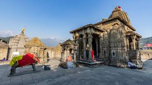
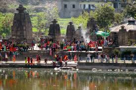
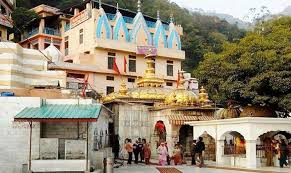
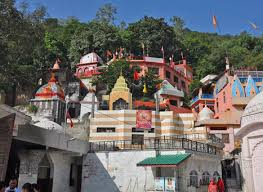

Baijnath Temple


Location: Baijnath town, Kangra district, Himachal Pradesh
Deity: Lord Shiva (as Vaidyanath, the Lord of Physicians)
Architecture: Nagara style; intricate stone carvings and shikhara
Historical Significance: Built in 1204 AD by two local merchants
Specialty: Shiva is worshipped here in the form of a lingam believed to have healing powers
Mythological Link: Associated with Ravana, who worshipped Shiva to gain immortality
Festivals: Maha Shivratri is celebrated with great devotion
Surroundings: Set against the backdrop of the Dhauladhar mountains
Jwala Ji Temple (Kangra)


Location: Jwalamukhi town, Kangra district, Himachal Pradesh
Deity: Goddess Jwala (flame manifestation of the Goddess)
Architecture: Modest structure with a dome and a golden spire
Unique Feature: Natural, eternal flame emerging from rocks without fuel
Shakti Peetha: Believed to mark the spot where the tongue of Goddess Sati fell
Mythological Link: Visited by the Pandavas and Raja Bhumi Chand of the Katoch dynasty
Festivals: Navratri is the most important festival, drawing thousands of devotees
Scientific Interest: The eternal flame has intrigued geologists and scientists